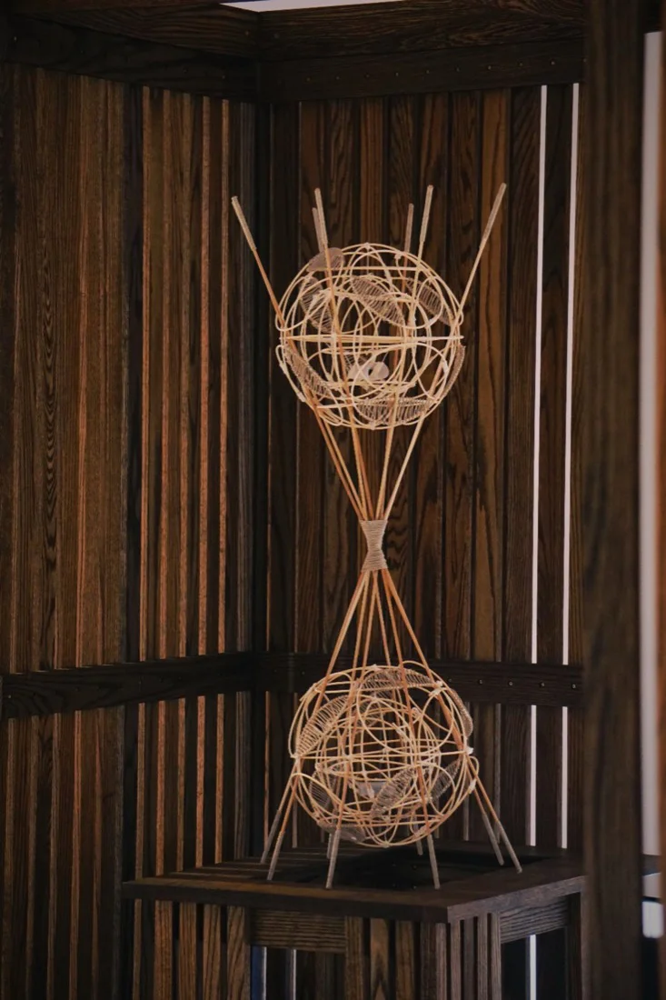
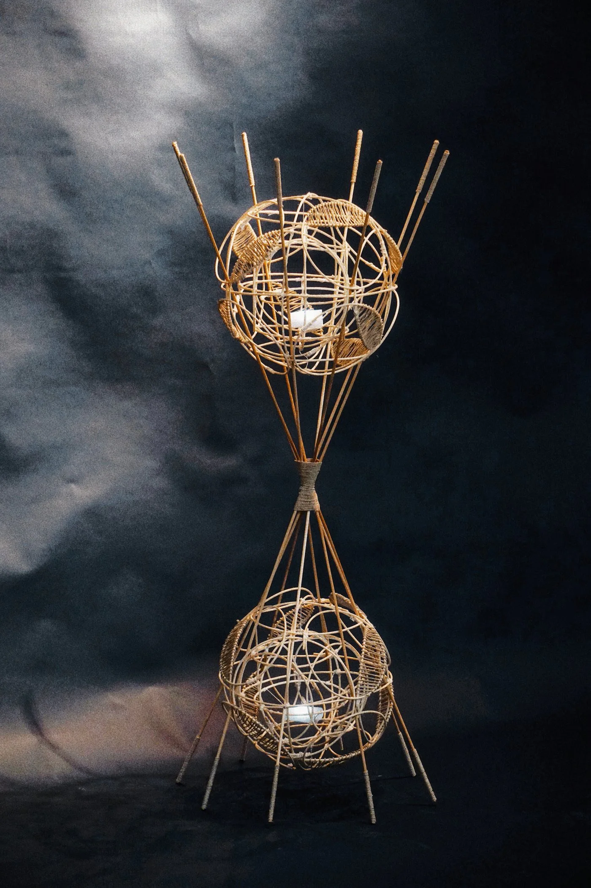
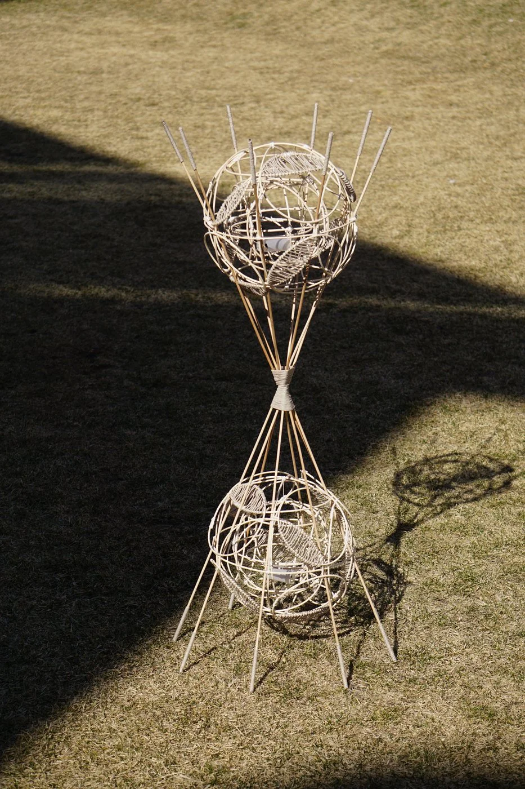
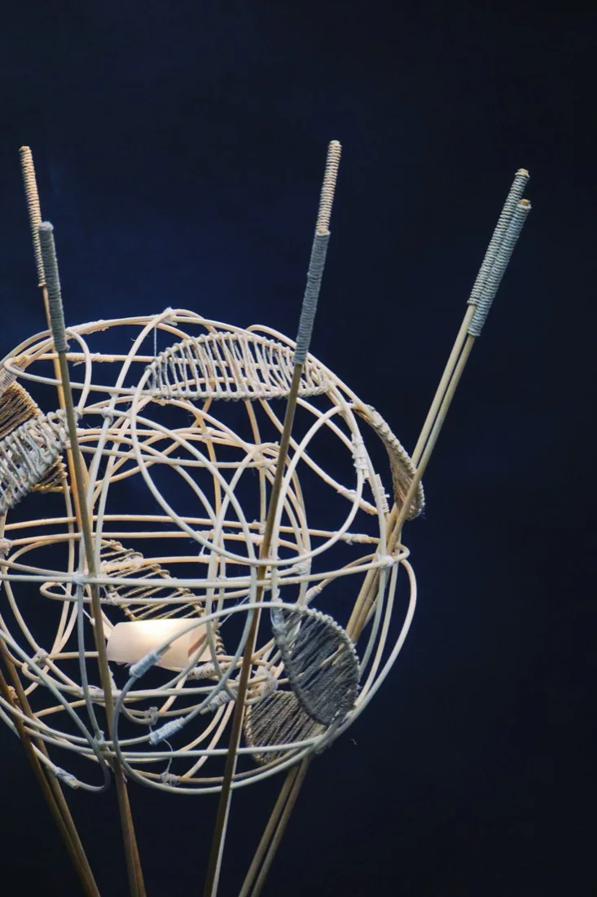
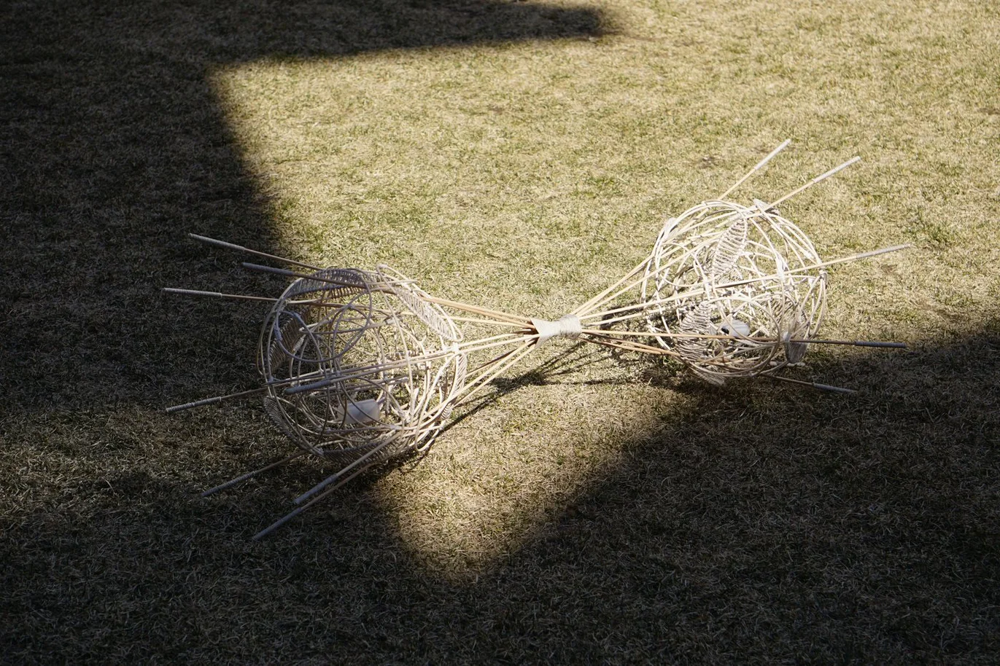
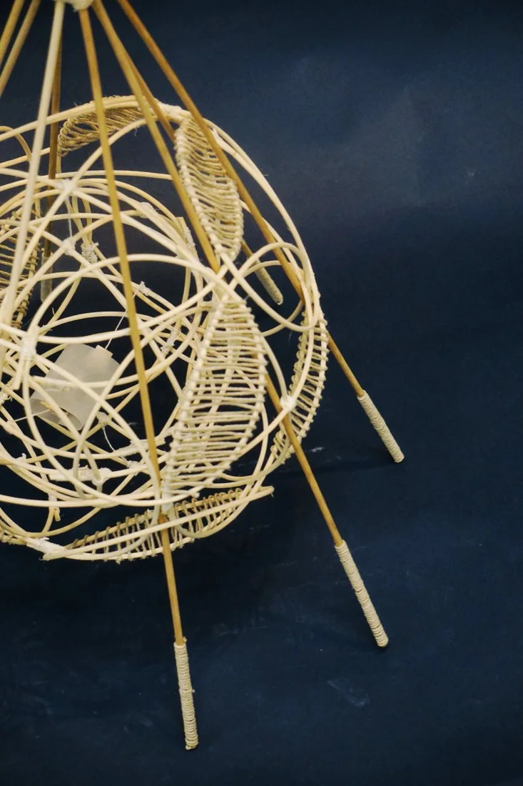

The Rolling Lamp






Wood Strings
Yarn
Light Bulb
Size
10 x 10 x 70 in
Year
2025
Description
This project reinterprets the traditional rolling lantern from the Song dynasty into a modern lamp that reflects both my cultural background and my own sense of possibility as a designer. The original rolling lantern was a toy for children, built with a bamboo structure that allowed it to roll on the ground while keeping the candle upright so the flame would never burn the frame or go out. I became interested in this ingenious balance system through historical research and hands on experiments, and I wanted to bring this ancient logic into a contemporary design language. Using bamboo and hand built structures, I transformed the rolling lantern into a lamp that can stand, lie down, hang, or swing freely in space. No matter how it is positioned, the inner light always stays upright, echoing the original function of the Song dynasty design. For me, this balancing mechanism became a metaphor. The outer structure represents my Chinese cultural roots, while the flame that always faces upward reflects my lasting commitment to art and design. The many possible positions of the lamp suggest the many paths I can take in the future without losing my core direction.